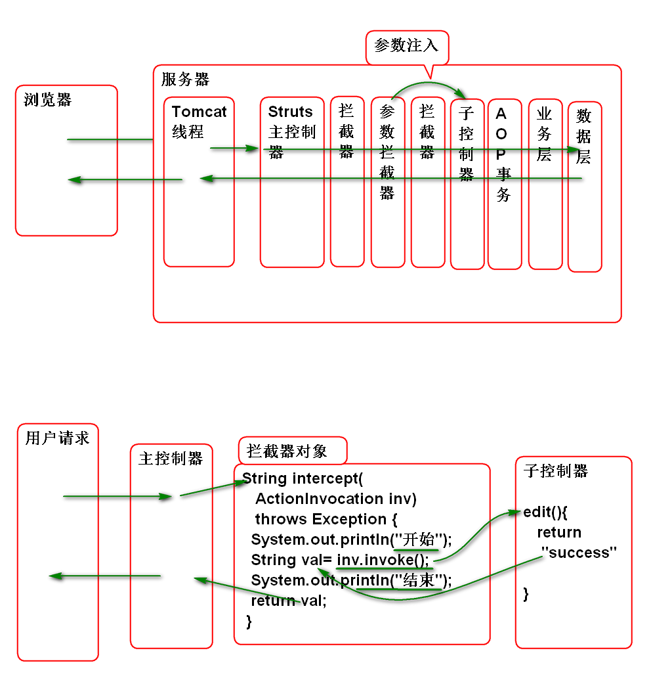

编写nav.jsp 封装网页导航条
<%@ page
contentType="text/html; charset=utf-8"
pageEncoding="utf-8"%>
<h1>用户管理</h1>
<!-- 导航菜单标签 nav -->
<nav>
<a href="list.action">首页</a>
<a href="add.action">添加用户</a>
</nav>
更新列表界面 list.jsp 添加导航条:
<%@ page
contentType="text/html; charset=utf-8"
pageEncoding="utf-8"%>
<%@taglib prefix="c"
uri="http://java.sun.com/jsp/jstl/core"%>
<!DOCTYPE html>
<html>
<head>
<meta charset="utf-8">
</head>
<body>
<c:import url="/WEB-INF/jsp/nav.jsp"/>
<h2>用户列表</h2>
<div>
<table>
<tr>
<th>编号</th>
<th>姓名</th>
<th>年龄</th>
<th>薪资</th>
<th>功能</th>
</tr>
<c:forEach items="${users}"
var="user">
<tr>
<td>${user.id}</td>
<td>${user.name}</td>
<td>${user.age}</td>
<td>${user.salary}</td>
<td>
<a href="edit.action?id=${user.id}">编辑</a>
</td>
</tr>
</c:forEach>
</table>
</div>
</body>
</html>
编写添加用户的表单界面 adduser.jsp
<%@ page
contentType="text/html; charset=utf-8"
pageEncoding="utf-8"%>
<%@taglib prefix="c"
uri="http://java.sun.com/jsp/jstl/core" %>
<!DOCTYPE html>
<html>
<head>
<meta charset="utf-8">
</head>
<body>
<c:import url="/WEB-INF/jsp/nav.jsp"/>
<h2>添加用户</h2>
<form action="save.action" method="post">
<div>
<label>用户名</label>
<input type="text" name="user.name"
value="${user.name}">
<c:if test="${type==1}">
<span>${message}</span>
</c:if>
</div>
<div>
<label>年龄</label>
<input type="text" name="user.age"
value="${user.age}">
<c:if test="${type==2}">
<span>${message}</span>
</c:if>
</div>
<div>
<label>薪水</label>
<input type="text" name="user.salary"
value="${user.salary}">
</div>
<div>
<label>入职日期</label>
<input type="text" name="user.hiredate"
value="${user.hiredate}">
<c:if test="${type==4}">
<span>${message}</span>
</c:if>
</div>
<div>
<input type="submit">
</div>
</form>
</body>
</html>
配置控制器, 显示添加界面 struts.xml:
<!-- 显示添加用户界面 -->
<action name="add">
<result>
/WEB-INF/jsp/adduser.jsp
</result>
</action>
测试添加用户界面
编写 UserVO 封装用户封装的表单信息
public class UserVO implements Serializable {
private static final long serialVersionUID = -3138004225815811171L;
private String name;
private Integer age;
private Double salary;
private String hiredate;
public UserVO() {
}
public UserVO(String name, Integer age, Double salary, String hiredate) {
super();
this.name = name;
this.age = age;
this.salary = salary;
this.hiredate = hiredate;
}
public String getName() {
return name;
}
public void setName(String name) {
this.name = name;
}
public Integer getAge() {
return age;
}
public void setAge(Integer age) {
this.age = age;
}
public Double getSalary() {
return salary;
}
public void setSalary(Double salary) {
this.salary = salary;
}
public String getHiredate() {
return hiredate;
}
public void setHiredate(String hiredate) {
this.hiredate = hiredate;
}
@Override
public String toString() {
return "UserVO [name=" + name + ", age=" + age + ", salary=" + salary + ", hiredate=" + hiredate + "]";
}
}
添加保存用户信息的业务方法 UserService
void save(String name, Integer age,
Double salary, String hiredate);
void save(UserVO user);
实现业务方法: UserServiceImpl
@Transactional
public void save(String name,
Integer age, Double salary,
String hiredate) {
if(name==null||name.trim().isEmpty()){
throw new NameIsEmptyException("不能空");
}
if(age==null){
throw new AgeIsEmptyException("必须有年龄");
}
Timestamp t=null;
try{
Date d = DateUtils.parseDate(
hiredate, "yyyy-MM-dd");
t = new Timestamp(d.getTime());
}catch(ParseException e){
e.printStackTrace();
throw new HiredateException("格式错误",e);
}
int max = userDao.findMaxId();
int id = max+1;
User user = new User(id, name, age,
salary, t);
userDao.saveUser(user);
}
public void save(UserVO user) {
save(user.getName(), user.getAge(),
user.getSalary(), user.getHiredate());
}
添加数据访问方法 UserDao
int findMaxId();
实现数据访问方法 UserDaoImpl
public int findMaxId() {
//sql: select max(t_id) as id
// from t_user
String hql="select max(id) as id "
+ "from User";
List<Number>list=(List<Number>)
template.find(hql);
int id = list.get(0).intValue();
return id;
}
添加控制器方法 UserAction:
private UserVO user;
public UserVO getUser() {
return user;
}
public void setUser(UserVO user) {
this.user = user;
}
//定义错误号: 1 name, 2 age, 3 salary,
// 4 hiredate
private int type;
private String message;
public String getMessage() {
return message;
}
public void setMessage(String message) {
this.message = message;
}
public int getType() {
return type;
}
public void setType(int type) {
this.type = type;
}
public String save(){
try{
userService.save(user);
return "success";
}catch(NameIsEmptyException e){
e.printStackTrace();
type=1;
message = e.getMessage();
return "error";
}catch(AgeIsEmptyException e){
e.printStackTrace();
type=2;
message = e.getMessage();
return "error";
}catch (HiredateException e) {
e.printStackTrace();
type = 4;
message = e.getMessage();
return "error";
}
}
其中 user 属性用于接收表单参数, type和message用于回显错误信息.
配置控制器 struts.xml
<!-- 添加用户表单的保存方法 -->
<action name="save" class="userAction"
method="save">
<result name="success"
type="redirectAction">
list
</result>
<result name="error">
/WEB-INF/jsp/adduser.jsp
</result>
</action>
测试
原理:
添加数据层方法 UserDao
User findById(Integer id);
实现数据层方法 UserDaoImpl
public User findById(Integer id) {
return template.get(User.class, id);
}
添加业务层方法: UserService
UserVO get(Integer id);
实现业务层方法: UserServiceImpl
public UserVO get(Integer id) {
if(id==null){
throw new UserNotFoundException("ID不能空");
}
User user = userDao.findById(id);
if(user==null){
throw new UserNotFoundException("没有找到");
}
UserVO vo = new UserVO();
BeanUtils.copyProperties(user, vo);
vo.setHiredate(
DateFormatUtils.format(
user.getHiredate(), "yyyy-MM-dd"));
return vo;
}
编写控制器方法: UserAction
private Integer id;
public Integer getId() {
return id;
}
public void setId(Integer id) {
this.id = id;
}
public String edit(){
user = userService.get(id);
return "success";
}
添加用户信息编辑界面: edituser.jsp
<%@ page
contentType="text/html; charset=utf-8"
pageEncoding="utf-8"%>
<%@taglib prefix="c"
uri="http://java.sun.com/jsp/jstl/core" %>
<!DOCTYPE html>
<html>
<head>
<meta charset="utf-8">
</head>
<body>
<c:import url="/WEB-INF/jsp/nav.jsp"/>
<h2>修改用户</h2>
<form action="update.action" method="post">
<div>
<label>编号</label>
<input type="text" name="id"
value="${id}" readonly="readonly">
</div>
<div>
<label>用户名</label>
<input type="text" name="user.name"
value="${user.name}">
<c:if test="${type==1}">
<span>${message}</span>
</c:if>
</div>
<div>
<label>年龄</label>
<input type="text" name="user.age"
value="${user.age}">
<c:if test="${type==2}">
<span>${message}</span>
</c:if>
</div>
<div>
<label>薪水</label>
<input type="text" name="user.salary"
value="${user.salary}">
</div>
<div>
<label>入职日期</label>
<input type="text" name="user.hiredate"
value="${user.hiredate}">
<c:if test="${type==4}">
<span>${message}</span>
</c:if>
</div>
<div>
<input type="submit">
</div>
</form>
</body>
</html>
配置控制器 struts.xml
<!-- 显示编辑用户信息的界面 -->
<action name="edit" class="userAction"
method="edit">
<result name="success" >
/WEB-INF/jsp/edituser.jsp
</result>
</action>
重构 list.jsp 为显示编辑界传递id参数
<td>
<a href="edit.action?id=${user.id}">编辑</a>
</td>
部署测试
添加数据保存方法 UserDao
void updateUser(User user);
实现数据层方法 UserDaoImpl
public void updateUser(User user) {
template.update(user);
}
添加业务层方法 UserService
void update(UserVO user, Integer id);
实现业务层方法 UserServiceImpl
public void update(UserVO user, Integer id) {
if(user.getName()==null||
user.getName().trim().isEmpty()){
throw new NameIsEmptyException("名字不能空");
}
if(user.getAge()==null){
throw new AgeIsEmptyException("姓名不能空");
}
Timestamp t = null;
try{
Date d = DateUtils.parseDate(
user.getHiredate(),
"yyyy-MM-dd");
t=new Timestamp(d.getTime());
}catch(ParseException e){
e.printStackTrace();
throw new HiredateException("格式错误!",e);
}
User u = new User();
BeanUtils.copyProperties(user, u);
u.setId(id);
u.setHiredate(t);
userDao.updateUser(u);
}
添加控制器方法: UserAction
public String update(){
try {
userService.update(user, id);
return "success";
} catch (NameIsEmptyException e) {
e.printStackTrace();
type=1;
message = e.getMessage();
return "error";
} catch (AgeIsEmptyException e) {
e.printStackTrace();
type=2;
message = e.getMessage();
return "error";
} catch (HiredateException e) {
e.printStackTrace();
type=4;
message = e.getMessage();
return "error";
}
}
注意: user, id, type, message 属性已经重用了.
配置控制器: struts.xml:
<!-- 修改用户信息界面的保存功能 -->
<action name="update"
class="userAction"
method="update">
<result name="success"
type="redirectAction">
list
</result>
<result name="error">
/WEB-INF/jsp/edituser.jsp
</result>
</action>
测试...
用户请求的调用流程
用户 请求:
拦截器工作原理:

编写拦截器:
编写连接器类:
@Component
public class DemoInterceptor
implements Interceptor {
public void destroy() {
}
public void init() {
}
public String intercept(
ActionInvocation inv)
throws Exception {
System.out.println("开始");
String val= inv.invoke();
System.out.println("结束");
return val;
}
}
配置组件扫描 spring-struts.xml
<context:component-scan
base-package="cn.tedu.web"/>
配置 struts.xml
<interceptors>
<interceptor name="demo"
class="demoInterceptor">
</interceptor>
<interceptor-stack name="myStack">
<interceptor-ref name="defaultStack"/>
<interceptor-ref name="demo"></interceptor-ref>
</interceptor-stack>
</interceptors>
<default-interceptor-ref name="myStack"/>
测试
经典面试题目: 如何开发一个 Struts2 拦截器
答案: 1. 实现拦截器接口, 在拦截器接口中调用 后续控制器; 2. 在配置时候必须将系统拦截器栈带上!